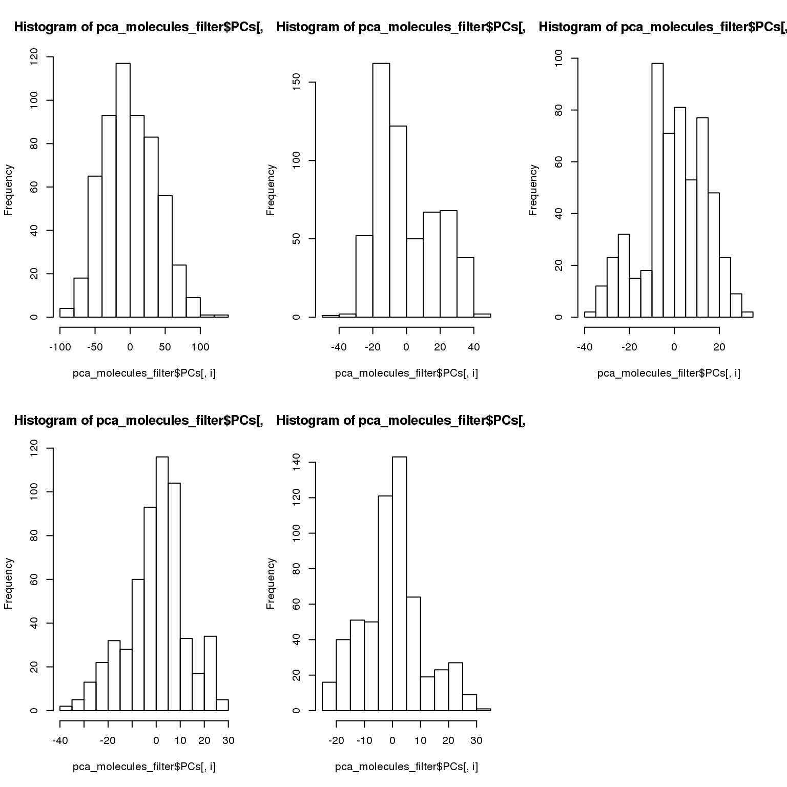
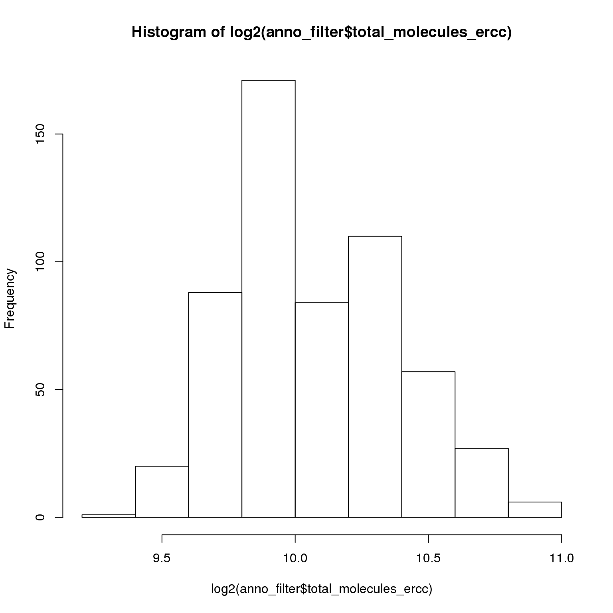

Last updated: 2016-04-28
Code version: 75e23ae09f8128081e5241c204064c50b6625372
library("ggplot2")
library("cowplot")
library("lmtest")
source("functions.R")Input filtered annotation.
anno_filter <- read.table("../data/annotation-filter.txt", header = TRUE,
stringsAsFactors = FALSE)
head(anno_filter) individual replicate well batch sample_id
1 NA19098 r1 A01 NA19098.r1 NA19098.r1.A01
2 NA19098 r1 A02 NA19098.r1 NA19098.r1.A02
3 NA19098 r1 A04 NA19098.r1 NA19098.r1.A04
4 NA19098 r1 A05 NA19098.r1 NA19098.r1.A05
5 NA19098 r1 A06 NA19098.r1 NA19098.r1.A06
6 NA19098 r1 A07 NA19098.r1 NA19098.r1.A07Input filtered molecule counts.
molecules_filter <- read.table("../data/molecules-filter.txt", header = TRUE,
stringsAsFactors = FALSE)
molecules_filter_ENSG <- molecules_filter[grep("ERCC", rownames(molecules_filter), invert = TRUE), ]
stopifnot(ncol(molecules_filter) == nrow(anno_filter),
colnames(molecules_filter) == anno_filter$sample_id)Input quality control file. Filter cells to match cells in molecules_filter.
qc <- read.table("../data/qc-ipsc.txt", header = TRUE,
stringsAsFactors = FALSE)
qc$sample_id <- with(qc, paste0(individual, ".", replicate, ".", well))
qc_filter <- qc[match(anno_filter$sample_id, qc$sample_id), ]
stopifnot(all.equal(qc_filter$sample_id, anno_filter$sample_id))Input standardized molecule counts.
molecules_cpm <- read.table("../data/molecules-cpm.txt", header = TRUE,
stringsAsFactors = FALSE)
stopifnot(ncol(molecules_cpm) == nrow(anno_filter),
colnames(molecules_cpm) == anno_filter$sample_id)Input Poisson GLM transformed molecule counts per million.
molecules_cpm_trans <- read.table("../data/molecules-cpm-trans.txt", header = TRUE,
stringsAsFactors = FALSE)
stopifnot(ncol(molecules_cpm_trans) == nrow(anno_filter),
colnames(molecules_cpm_trans) == anno_filter$sample_id)Input final batch-corrected molecule counts per million.
molecules_final <- read.table("../data/molecules-final.txt", header = TRUE,
stringsAsFactors = FALSE)
stopifnot(ncol(molecules_final) == nrow(anno_filter),
colnames(molecules_final) == anno_filter$sample_id)pca_molecules_filter <- run_pca(molecules_filter_ENSG)
pca_molecules_cpm <- run_pca(molecules_cpm)
pca_molecules_cpm_trans <- run_pca(molecules_cpm_trans)
pca_final <- run_pca(molecules_final)We consider the overall transcriptional profile of each cell and estimate percent of variation in expression profiles that comes from individuals and also that comes from replicates.
Multivariate analysis of variance is used on the first five principal components.
*filtered data
par(mfrow = c(2,3))
for (i in 1:5) { hist(pca_molecules_filter$PCs[,i]) }
fit <- manova((pca_molecules_filter$PCs[,1:2]) ~ as.factor(anno_filter$individual) +
as.factor(anno_filter$replicate) )
summary(fit, test = "Wilks") Df Wilks approx F num Df den Df
as.factor(anno_filter$individual) 2 0.09226 639.56 4 1116
as.factor(anno_filter$replicate) 2 0.61299 77.35 4 1116
Residuals 559
Pr(>F)
as.factor(anno_filter$individual) < 2.2e-16 ***
as.factor(anno_filter$replicate) < 2.2e-16 ***
Residuals
---
Signif. codes: 0 '***' 0.001 '**' 0.01 '*' 0.05 '.' 0.1 ' ' 1fit2 <- lm((pca_molecules_filter$PCs[,1]) ~ as.factor(anno_filter$individual) +
as.factor(anno_filter$replicate))
fit2_1 <- lm((pca_molecules_filter$PCs[,1]) ~ as.factor(anno_filter$individual))
fit2_2 <- lm((pca_molecules_filter$PCs[,1]) ~ as.factor(anno_filter$replicate))
anova(fit2, fit2_1)Analysis of Variance Table
Model 1: (pca_molecules_filter$PCs[, 1]) ~ as.factor(anno_filter$individual) +
as.factor(anno_filter$replicate)
Model 2: (pca_molecules_filter$PCs[, 1]) ~ as.factor(anno_filter$individual)
Res.Df RSS Df Sum of Sq F Pr(>F)
1 559 614582
2 561 634780 -2 -20198 9.1857 0.0001188 ***
---
Signif. codes: 0 '***' 0.001 '**' 0.01 '*' 0.05 '.' 0.1 ' ' 1anova(fit2, fit2_2)Analysis of Variance Table
Model 1: (pca_molecules_filter$PCs[, 1]) ~ as.factor(anno_filter$individual) +
as.factor(anno_filter$replicate)
Model 2: (pca_molecules_filter$PCs[, 1]) ~ as.factor(anno_filter$replicate)
Res.Df RSS Df Sum of Sq F Pr(>F)
1 559 614582
2 561 746932 -2 -132351 60.191 < 2.2e-16 ***
---
Signif. codes: 0 '***' 0.001 '**' 0.01 '*' 0.05 '.' 0.1 ' ' 1
*CPM
fit <- manova((pca_molecules_cpm$PCs[,1:2]) ~ as.factor(anno_filter$individual) +
as.factor(anno_filter$replicate) )
summary(fit, test = "Wilks") Df Wilks approx F num Df den Df
as.factor(anno_filter$individual) 2 0.04299 1066.67 4 1116
as.factor(anno_filter$replicate) 2 0.44661 138.48 4 1116
Residuals 559
Pr(>F)
as.factor(anno_filter$individual) < 2.2e-16 ***
as.factor(anno_filter$replicate) < 2.2e-16 ***
Residuals
---
Signif. codes: 0 '***' 0.001 '**' 0.01 '*' 0.05 '.' 0.1 ' ' 1fit2 <- lm((pca_molecules_cpm$PCs[,1]) ~ as.factor(anno_filter$individual) +
as.factor(anno_filter$replicate))
fit2_1 <- lm((pca_molecules_cpm$PCs[,1]) ~ as.factor(anno_filter$individual))
fit2_2 <- lm((pca_molecules_cpm$PCs[,1]) ~ as.factor(anno_filter$replicate))
anova(fit2, fit2_1)Analysis of Variance Table
Model 1: (pca_molecules_cpm$PCs[, 1]) ~ as.factor(anno_filter$individual) +
as.factor(anno_filter$replicate)
Model 2: (pca_molecules_cpm$PCs[, 1]) ~ as.factor(anno_filter$individual)
Res.Df RSS Df Sum of Sq F Pr(>F)
1 559 22445
2 561 43740 -2 -21295 265.17 < 2.2e-16 ***
---
Signif. codes: 0 '***' 0.001 '**' 0.01 '*' 0.05 '.' 0.1 ' ' 1anova(fit2, fit2_2)Analysis of Variance Table
Model 1: (pca_molecules_cpm$PCs[, 1]) ~ as.factor(anno_filter$individual) +
as.factor(anno_filter$replicate)
Model 2: (pca_molecules_cpm$PCs[, 1]) ~ as.factor(anno_filter$replicate)
Res.Df RSS Df Sum of Sq F Pr(>F)
1 559 22445
2 561 177989 -2 -155543 1936.9 < 2.2e-16 ***
---
Signif. codes: 0 '***' 0.001 '**' 0.01 '*' 0.05 '.' 0.1 ' ' 1*CPM, poisson transformed
fit <- manova((pca_molecules_cpm_trans$PCs[,1:2]) ~
as.factor(anno_filter$individual) +
as.factor(anno_filter$replicate) )
summary(fit, test = "Wilks") Df Wilks approx F num Df den Df
as.factor(anno_filter$individual) 2 0.03477 1217.21 4 1116
as.factor(anno_filter$replicate) 2 0.35533 189.04 4 1116
Residuals 559
Pr(>F)
as.factor(anno_filter$individual) < 2.2e-16 ***
as.factor(anno_filter$replicate) < 2.2e-16 ***
Residuals
---
Signif. codes: 0 '***' 0.001 '**' 0.01 '*' 0.05 '.' 0.1 ' ' 1fit2 <- lm((pca_molecules_cpm_trans$PCs[,1]) ~ as.factor(anno_filter$individual) +
as.factor(anno_filter$replicate))
fit2_1 <- lm((pca_molecules_cpm_trans$PCs[,1]) ~ as.factor(anno_filter$individual))
fit2_2 <- lm((pca_molecules_cpm_trans$PCs[,1]) ~ as.factor(anno_filter$replicate))
anova(fit2, fit2_1)Analysis of Variance Table
Model 1: (pca_molecules_cpm_trans$PCs[, 1]) ~ as.factor(anno_filter$individual) +
as.factor(anno_filter$replicate)
Model 2: (pca_molecules_cpm_trans$PCs[, 1]) ~ as.factor(anno_filter$individual)
Res.Df RSS Df Sum of Sq F Pr(>F)
1 559 136026
2 561 200844 -2 -64818 133.18 < 2.2e-16 ***
---
Signif. codes: 0 '***' 0.001 '**' 0.01 '*' 0.05 '.' 0.1 ' ' 1anova(fit2, fit2_2)Analysis of Variance Table
Model 1: (pca_molecules_cpm_trans$PCs[, 1]) ~ as.factor(anno_filter$individual) +
as.factor(anno_filter$replicate)
Model 2: (pca_molecules_cpm_trans$PCs[, 1]) ~ as.factor(anno_filter$replicate)
Res.Df RSS Df Sum of Sq F Pr(>F)
1 559 136026
2 561 425361 -2 -289335 594.51 < 2.2e-16 ***
---
Signif. codes: 0 '***' 0.001 '**' 0.01 '*' 0.05 '.' 0.1 ' ' 1*CPM, batch corrected
fit <- manova((pca_final$PCs[,1:2]) ~ as.factor(anno_filter$individual) +
as.factor(anno_filter$replicate) )
summary(fit, test = "Wilks") Df Wilks approx F num Df den Df
as.factor(anno_filter$individual) 2 0.02091 1650.58 4 1116
as.factor(anno_filter$replicate) 2 0.82847 27.52 4 1116
Residuals 559
Pr(>F)
as.factor(anno_filter$individual) < 2.2e-16 ***
as.factor(anno_filter$replicate) < 2.2e-16 ***
Residuals
---
Signif. codes: 0 '***' 0.001 '**' 0.01 '*' 0.05 '.' 0.1 ' ' 1fit2 <- lm((pca_final$PCs[,1]) ~ as.factor(anno_filter$individual) +
as.factor(anno_filter$replicate))
fit2_1 <- lm((pca_final$PCs[,1]) ~ as.factor(anno_filter$individual))
fit2_2 <- lm((pca_final$PCs[,1]) ~ as.factor(anno_filter$replicate))
anova(fit2, fit2_1)Analysis of Variance Table
Model 1: (pca_final$PCs[, 1]) ~ as.factor(anno_filter$individual) + as.factor(anno_filter$replicate)
Model 2: (pca_final$PCs[, 1]) ~ as.factor(anno_filter$individual)
Res.Df RSS Df Sum of Sq F Pr(>F)
1 559 84382
2 561 92286 -2 -7903.9 26.18 1.354e-11 ***
---
Signif. codes: 0 '***' 0.001 '**' 0.01 '*' 0.05 '.' 0.1 ' ' 1anova(fit2, fit2_2)Analysis of Variance Table
Model 1: (pca_final$PCs[, 1]) ~ as.factor(anno_filter$individual) + as.factor(anno_filter$replicate)
Model 2: (pca_final$PCs[, 1]) ~ as.factor(anno_filter$replicate)
Res.Df RSS Df Sum of Sq F Pr(>F)
1 559 84382
2 561 370314 -2 -285931 947.09 < 2.2e-16 ***
---
Signif. codes: 0 '***' 0.001 '**' 0.01 '*' 0.05 '.' 0.1 ' ' 1Code for computing correlation between cells within batches and between batches.
compute_corr_batch <- function(molecules_input, annotation) {
cor_mat <- cor(molecules_input, method = "spearman")
batch <- unique(annotation$batch)
individual <- unique(annotation$individual)
# same individual, within batch
corr_same_ind_within_batch <-
lapply(1:length(individual), function(i) {
batch <-
unique(annotation$batch[annotation$individual == individual[i]])
corr_batch <- lapply(1:length(batch), function(i) {
df <- cor_mat[annotation$batch == batch[i],
annotation$batch == batch[i]]
df[upper.tri(df, diag = FALSE)]
})
unlist(corr_batch)
})
# same individual, between replicates
corr_same_ind_between_batch <-
lapply(1:length(individual), function(i) {
batch <-
unique(annotation$batch[annotation$individual == individual[i]])
submat <- lapply(1:(length(batch)-1), function(i) {
submat0 <- lapply(2:length(batch), function(j) {
df <- cor_mat[annotation$batch == batch[i],
annotation$batch == batch[j]]
df[upper.tri(df, diag = FALSE)]
})
unlist(submat0)
})
unlist(submat)
})
# different individual
corr_diff_ind_between_batch <-
lapply(1:(length(individual)-1), function(i) {
if (i == 1) {
batch <-
unique(annotation$batch[annotation$individual == individual[i]])
batch_other <-
unique(annotation$batch[annotation$individual != individual[i+1]])
}
if (i == 2) {
batch <-
unique(annotation$batch[annotation$individual == individual[i]])
batch_other <-
unique(annotation$batch[annotation$individual == individual[i+1]])
}
submat <- lapply(1:length(batch), function(i) {
submat0 <- lapply(1:length(batch_other), function(j) {
df <- cor_mat[annotation$batch == batch[i],
annotation$batch == batch_other[j]]
df[upper.tri(df, diag = FALSE)]
})
unlist(submat0)
})
unlist(submat)
})
return( data.frame(
corrs = c(unlist(corr_same_ind_within_batch),
unlist(corr_same_ind_between_batch),
unlist(corr_diff_ind_between_batch)),
labels = c(rep("same_ind_within", length(corr_same_ind_within_batch)),
rep("between", length(corr_same_ind_between_batch)),
rep("diff_ind", length(corr_diff_ind_between_batch)) ) )
) }Compute spearman correlations for data after each transformation step.
corr_filter <- compute_corr_batch(molecules_filter_ENSG, anno_filter)
corr_cpm <- compute_corr_batch(molecules_cpm, anno_filter)
corr_cpm_trans <- compute_corr_batch(molecules_cpm_trans, anno_filter)
corr_final <- compute_corr_batch(molecules_final, anno_filter)
par(mfrow = c(2,2))
with(corr_filter,
boxplot(corrs ~ labels,
names.arg = c("within-batch", "between-batch"),
main = "Counts") )
with(corr_cpm,
boxplot(corrs ~ labels, names.arg = c("within-batch", "between-batch"),
main = "Counts per million") )
with(corr_cpm_trans,
boxplot(corrs ~ labels, names.arg = c("within-batch", "between-batch"),
main = "Poisson transformation") )
with(corr_final,
boxplot(corrs ~ labels, names.arg = c("within-batch", "between-batch"),
main = "Batch corrected") )Consider total molecule-count differences between individuals and batches in ERCC genes. We transformed the total molecule-count of each cell to log scale and fit simple linear regression to test individual effect. R-squared was computed to quantify the percent of variation due to individual and replicate factor.
molecules <- read.table("../data/molecules-filter.txt", header = TRUE,
stringsAsFactors = FALSE)
stopifnot(colnames(molecules) == anno_filter$sample_id)
ercc_index <- grepl("ERCC", rownames(molecules))
anno_filter$total_molecules_gene = colSums(molecules[!ercc_index, ])
anno_filter$total_molecules_ercc = colSums(molecules[ercc_index, ])
anno_filter$total_molecules = colSums(molecules)
anno_filter$num_genes = apply(molecules[!ercc_index, ], 2, function(x) sum(x > 0))hist(log2(anno_filter$total_molecules_ercc))
# differences in total molecule-counts of ercc genes
fit0 <- lm(log2(total_molecules_ercc) ~ 1,
data = anno_filter)
fit1 <- lm(log2(total_molecules_ercc) ~ as.factor(individual),
data = anno_filter)
lrtest(fit1, fit0)Likelihood ratio test
Model 1: log2(total_molecules_ercc) ~ as.factor(individual)
Model 2: log2(total_molecules_ercc) ~ 1
#Df LogLik Df Chisq Pr(>Chisq)
1 4 47.485
2 2 -138.114 -2 371.2 < 2.2e-16 ***
---
Signif. codes: 0 '***' 0.001 '**' 0.01 '*' 0.05 '.' 0.1 ' ' 1tapply(anno_filter$total_molecules_ercc,
anno_filter$individual,
FUN = mean) NA19098 NA19101 NA19239
1401.0704 1024.7910 979.4299 # # differences in total molecule-counts of ENSG genes
# fit0 <- lm(log2(total_molecules_gene) ~ 1,
# data = anno_filter)
# fit1 <- lm(log2(total_molecules_gene) ~ as.factor(individual),
# data = anno_filter)
# lrtest(fit1, fit0)
# tapply(anno_filter$total_molecules_gene,
# anno_filter$individual,
# FUN = mean)
# # compute percent of variance explained
# fit1_2 <- lm(log2(total_molecules_ercc) ~ as.factor(individual) +
# as.factor(replicate),
# data = anno_filter)
# fit1_3 <- lm(log2(total_molecules_ercc) ~ as.factor(replicate),
# data = anno_filter)
# anova(fit1_2, fit1)
# anova(fit1_2, fit1_3)
# within each individual
fit1 <- lm(log2(total_molecules_ercc) ~ as.factor(replicate),
data = anno_filter[anno_filter$individual == "NA19098",])
lrtest(fit1)Likelihood ratio test
Model 1: log2(total_molecules_ercc) ~ as.factor(replicate)
Model 2: log2(total_molecules_ercc) ~ 1
#Df LogLik Df Chisq Pr(>Chisq)
1 3 74.419
2 2 38.615 -1 71.607 < 2.2e-16 ***
---
Signif. codes: 0 '***' 0.001 '**' 0.01 '*' 0.05 '.' 0.1 ' ' 1fit2 <- lm(log2(total_molecules_ercc) ~ as.factor(replicate),
data = anno_filter[anno_filter$individual == "NA19101",])
lrtest(fit2)Likelihood ratio test
Model 1: log2(total_molecules_ercc) ~ as.factor(replicate)
Model 2: log2(total_molecules_ercc) ~ 1
#Df LogLik Df Chisq Pr(>Chisq)
1 4 84.059
2 2 -47.021 -2 262.16 < 2.2e-16 ***
---
Signif. codes: 0 '***' 0.001 '**' 0.01 '*' 0.05 '.' 0.1 ' ' 1fit3 <- lm(log2(total_molecules_ercc) ~ as.factor(replicate),
data = anno_filter[anno_filter$individual == "NA19239",])
lrtest(fit3)Likelihood ratio test
Model 1: log2(total_molecules_ercc) ~ as.factor(replicate)
Model 2: log2(total_molecules_ercc) ~ 1
#Df LogLik Df Chisq Pr(>Chisq)
1 4 126.58
2 2 122.02 -2 9.1294 0.01041 *
---
Signif. codes: 0 '***' 0.001 '**' 0.01 '*' 0.05 '.' 0.1 ' ' 1tapply(anno_filter$total_molecules_gene,
anno_filter$batch,
FUN = mean)NA19098.r1 NA19098.r3 NA19101.r1 NA19101.r2 NA19101.r3 NA19239.r1
72402.71 82656.51 60962.14 57738.86 57595.88 67279.72
NA19239.r2 NA19239.r3
62731.68 71082.08 sessionInfo()R version 3.2.0 (2015-04-16)
Platform: x86_64-unknown-linux-gnu (64-bit)
locale:
[1] LC_CTYPE=en_US.UTF-8 LC_NUMERIC=C
[3] LC_TIME=en_US.UTF-8 LC_COLLATE=en_US.UTF-8
[5] LC_MONETARY=en_US.UTF-8 LC_MESSAGES=en_US.UTF-8
[7] LC_PAPER=en_US.UTF-8 LC_NAME=C
[9] LC_ADDRESS=C LC_TELEPHONE=C
[11] LC_MEASUREMENT=en_US.UTF-8 LC_IDENTIFICATION=C
attached base packages:
[1] stats graphics grDevices utils datasets methods base
other attached packages:
[1] testit_0.4 lmtest_0.9-34 zoo_1.7-12 cowplot_0.3.1 ggplot2_1.0.1
[6] knitr_1.10.5
loaded via a namespace (and not attached):
[1] Rcpp_0.12.0 magrittr_1.5 MASS_7.3-40 munsell_0.4.2
[5] lattice_0.20-31 colorspace_1.2-6 stringr_1.0.0 httr_0.6.1
[9] plyr_1.8.3 tools_3.2.0 grid_3.2.0 gtable_0.1.2
[13] htmltools_0.2.6 yaml_2.1.13 digest_0.6.8 reshape2_1.4.1
[17] formatR_1.2 bitops_1.0-6 RCurl_1.95-4.6 evaluate_0.7
[21] rmarkdown_0.6.1 stringi_0.4-1 scales_0.2.4 proto_0.3-10